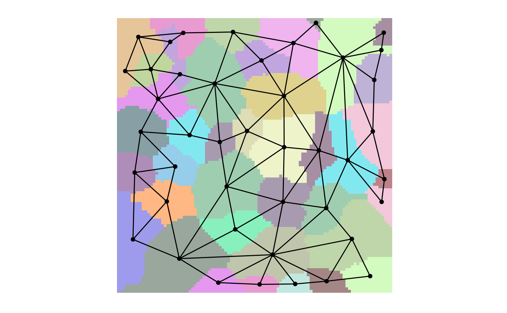
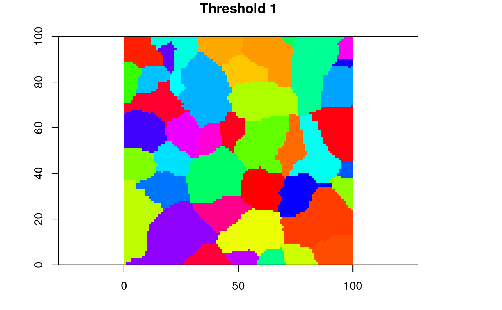

Extract a grain (i.e. a scaled version of a Voronoi tessellation) from a GOC model.
grain(x, ...) # S4 method for goc grain(x, whichThresh, ...)
| x | A |
|---|---|
| ... | Additional arguments (not used). |
| whichThresh | Integer giving the grain threshold to extract.
This is the index of the threshold extracted by |
A list object containing the following elements:
summarygives the properties of the specified scale/grain whichThresh
of the GOC model;
voronoia RasterLayer giving the Voronoi tessellation the
specified scale/grain whichThresh of the GOC model;
centroidsa SpatialPoints objects giving the centroids
of the polygons in the Voronoi tessellation at the specified scale/grain whichThresh;
tha igraph object giving the graph describing the relationship
among the polygons at the specified scale/grain whichThresh
Fall, A., M.-J. Fortin, M. Manseau, D. O'Brien. (2007) Spatial graphs: Principles and applications for habitat connectivity. Ecosystems 10:448:461.
Galpern, P., M. Manseau. (2013a) Finding the functional grain: comparing methods for scaling resistance surfaces. Landscape Ecology 28:1269-1291.
Galpern, P., M. Manseau. (2013b) Modelling the influence of landscape connectivity on animal distribution: a functional grain approach. Ecography 36:1004-1016.
Galpern, P., M. Manseau, A. Fall. (2011) Patch-based graphs of landscape connectivity: a guide to construction, analysis, and application for conservation. Biological Conservation 144:44-55.
Galpern, P., M. Manseau, P.J. Wilson. (2012) Grains of connectivity: analysis at multiple spatial scales in landscape genetics. Molecular Ecology 21:3996-4009.
library(raster) ## Load raster landscape tiny <- raster(system.file("extdata/tiny.asc", package = "grainscape")) ## Create a resistance surface from a raster using an is-becomes reclassification tinyCost <- reclassify(tiny, rcl = cbind(c(1, 2, 3, 4), c(1, 5, 10, 12))) ## Produce a patch-based MPG where patches are resistance features=1 tinyPatchMPG <- MPG(cost = tinyCost, patch = (tinyCost == 1)) ## Extract a representative subset of 5 grains of connectivity tinyPatchGOC <- GOC(tinyPatchMPG, nThresh = 5) ## Very quick visualization at the finest scale/grain/threshold, ## producing plot on the default graphics device tinyPatchGOCgrain <- grain(tinyPatchGOC, whichThresh = 1) plot(tinyPatchGOCgrain, col = topo.colors(10))## Visualize the model at the finest scale/grain/threshold ## Manual control of plotting plot(grain(tinyPatchGOC, whichThresh = 1)@voronoi, col = sample(rainbow(100)), legend = FALSE, main = "Threshold 1")